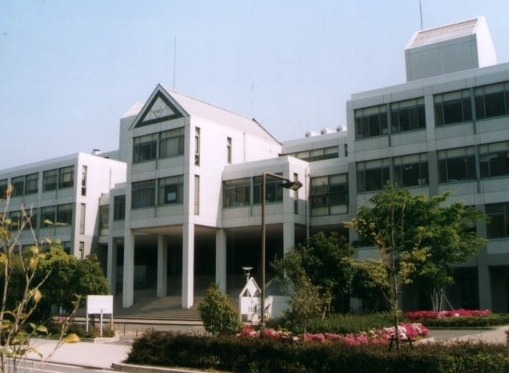

캐나디안 아카데미 본관 · 사진: Frdwiki at en.wikipedia / Wikimedia Commons, Public domain
캐나디안 아카데미(Canadian Academy, 고베) — 이름은 캐나다인데 교육과정은 IB입니다
⚠️ 이름 혼동 주의 — 이 학교는 캐나다 교육과정을 쓰는 학교가 아닙니다. 교명은 개교 당시 배경에서 온 것으로 알려져 있고, 현재는 IB 전 과정 + 미국식 고교 졸업 요건으로 운영됩니다. 캐나다 주별 졸업장을 주는 학교 — CDNIS 홍콩(온타리오주)·마카오 국제학교(앨버타주) — 와는 구조가 전혀 다릅니다.
1. 어떤 학교인가
캐나디안 아카데미는 1913년 9월에 개교한 것으로 알려진 학교입니다. 처음 이름은 캐나다 감리교 아카데미(Canadian Methodist Academy)였고, 1917년에 지금의 캐나디안 아카데미로 이름이 바뀐 것으로 소개됩니다. 일본에 있는 국제학교 가운데 가장 오래된 축에 드는 학교입니다.
현재 캠퍼스는 고베의 인공섬 롯코아일랜드(六甲アイランド)에 있습니다. 1990년에 이곳으로 옮긴 것으로 알려져 있고, 본관과 기숙사 건물, 유아·활동 센터가 한 부지 안에 모여 있습니다. 학년은 유아 과정부터 12학년까지이고 수업은 영어로 이루어집니다.
교육과정은 2011년에 IB 월드스쿨이 된 것으로 알려져 있고, IB 초등 과정(PYP)·중등 과정(MYP)·디플로마(DP)를 운영합니다. 인증은 WASC(미국 서부 학교·대학 협회)와 CIS(국제학교협의회)로 소개됩니다.
※ 학생 수·학비·연도별 시험 결과처럼 해마다 달라지는 수치는 이 글에 적지 않았습니다. 학교 요강을 직접 확인하세요.
2. 핵심 하나 — 졸업할 때 서류가 한 장이 아닙니다
이 학교를 설명할 때 빠지지 않는 대목이 있습니다. 졸업생이 IB 디플로마와 미국식 고등학교 졸업장을 함께 받을 수 있는 구조로 알려져 있다는 점입니다.
한국 가정이 이 말을 들으면 보통 "그러면 두 배로 힘든 건가요" 하고 물으십니다. 그렇지는 않습니다. 두 개를 따로 공부하는 것이 아니라, 같은 2년을 두 기준으로 정산하는 쪽에 가깝습니다. 다만 가정이 반드시 알아야 할 것이 하나 있습니다. 디플로마 전 과정을 이수할지, 아니면 졸업 요건을 채우면서 IB 과목만 골라 담을지는 11학년이 되기 전에 정해야 하는 선택이라는 점입니다.
| 구간 | 운영 방식(알려진 바) | 한국에서 온 아이가 먼저 부딪히는 것 |
|---|---|---|
| 유아~5학년 | IB 초등 과정(PYP) | 진도가 눈에 안 보임 — 탐구 단원으로 묶여 돌아감 |
| 6~10학년 | IB 중등 과정(MYP) | 기준표(루브릭) 채점 — 답이 맞아도 형식이 어긋나면 깎임 |
| 11~12학년 | IB 디플로마(DP) + 미국식 졸업 요건 | 2년짜리 기한 관리 — 과제가 길고 서로 겹침 |
| 졸업 서류 | IB 디플로마 + 미국식 고교 졸업장 | 어느 서류로 지원할지를 미리 정해야 함 |
표의 두 번째 줄이 한국에서 온 아이들이 가장 많이 흔들리는 지점입니다. 한국 학교에서 수학을 잘하던 아이가 답은 맞혔는데 점수가 중간으로 나오는 경험을 처음 합니다. MYP는 과제마다 기준표가 붙고, 그 기준표가 요구하는 서술의 모양이 따로 있기 때문입니다. → 형성평가·총괄평가 · 성적표 읽는 법
3. 핵심 둘 — 일본에서는 드문 기숙이 있습니다
캐나디안 아카데미에는 글로스터 하우스(Gloucester House)라는 기숙사가 있는 것으로 알려져 있습니다. 일본의 국제학교는 대부분 통학 전용이라, 기숙이라는 선택지가 있다는 것 자체가 이 학교를 찾는 이유가 되기도 합니다.
주재원 가정에서 기숙이 의미를 갖는 경우는 꽤 구체적입니다.
· ① 발령이 간사이 밖으로 바뀌는 경우 — 아이의 학교를 바꾸지 않고 유지할 수 있습니다. 특히 11~12학년에 걸린 아이에게는 학교를 옮기지 않는 것 자체가 성적을 지키는 일입니다.
· ② 부모가 먼저 귀국하는 경우 — 졸업까지 남은 기간이 1~2년이라면 검토 대상이 됩니다.
· ③ 통학이 현실적으로 어려운 지역에 집이 정해진 경우
📌 다만 솔직히 말씀드리면, 이 학교의 기숙은 대규모 보딩스쿨과 성격이 다릅니다. 영국·미국의 보딩스쿨처럼 전교생의 상당수가 기숙하는 구조가 아니라 소수 인원을 받는 형태로 알려져 있습니다. 그래서 "자리가 있는가"가 먼저이고, 조건과 정원은 해마다 달라집니다. 반드시 학교에 직접 문의해 확인하세요.
기숙을 고민하실 때 기숙이 해결해 주지 않는 것도 함께 보셔야 합니다. 생활 관리와 통학 시간은 해결되지만, 학습 영어와 과목 선택은 그대로 남습니다. 이 부분은 해로 인터내셔널 스쿨 방콕 편에서 자세히 다뤘습니다.
4. 롯코아일랜드라는 섬 — 집을 어디에 구하느냐가 하루를 정합니다
캠퍼스가 인공섬 위에 있다는 점은 생활에 그대로 영향을 줍니다. 섬은 다리와 신교통 노선으로 고베 도심과 이어져 있는데, 가정이 실제로 부딪히는 질문은 단순합니다. 섬 안에 집을 구할 것인가, 도심에 구할 것인가.
· 섬 안에 살면 통학이 짧아지고 방과후 활동을 끝까지 시키기 쉽습니다. 대신 생활권이 좁습니다.
· 도심(산노미야·오카모토 방면)에 살면 생활은 편하지만 매일 왕복 시간이 붙습니다. 특히 방과후 활동을 하는 학년이면 귀가가 늦어집니다. → 방과후·클럽(ECA/CCA)
그래서 집을 보기 전에 학교에 물어볼 것이 있습니다. 통학 버스 노선이 우리가 보는 동네까지 오는가, 몇 시에 서는가, 늦은 시간 버스가 있는가. 이 세 가지를 모르고 계약하면 1년 내내 고생합니다. → 통학·스쿨버스 정리
5. 한국(주재원) 학생이 겪는 어려움
· ① "영어는 되는데 점수가 안 오른다." 회화가 아니라 학습 영어의 문제입니다. 기준표의 지시어(analyse·evaluate·justify)를 읽어 내지 못하면 아무리 길게 써도 중간 점수에 머뭅니다. → 영어 공부법
· ② "수학은 아는데 서술에서 깎인다." 계산력은 충분한데 영어 용어와 풀이 과정 서술에서 막힙니다. → 알지브라 공부법
· ③ PYP 구간에서 "진도가 안 보인다." 교과서를 한 권 끝내는 구조가 아니라 탐구 단원으로 돌아가기 때문에 집에서 상태를 가늠하기 어렵습니다. → 리딩 레벨 읽는 법
· ④ 일본어가 생활에 끼어듭니다. 수업은 영어로 돌아가지만 병원·관공서·동네 생활은 일본어입니다. 아이가 학교 밖에서 위축되는 시기가 옵니다. → 일본어(JLPT)
6. 그래서 이렇게 준비합니다
· 첫째, 합류 학년부터 확인합니다. 6학년 이상으로 들어간다면 바로 MYP 구간입니다. 기준표 채점에 적응하는 것이 1순위이고, 보통 한 학기가 걸립니다.
· 둘째, 영어는 "읽고 쓰는 영어"로 좁힙니다. 교과 지문을 읽고 요약하는 연습, 지시어대로 문단을 구성하는 연습입니다. 회화 수업을 더 늘리는 것은 이 시기에 효과가 가장 낮습니다.
· 셋째, 수학은 용어와 서술을 먼저, 진도는 그다음입니다.
· 넷째, 11학년 1년 전에 결정 준비를 합니다. 디플로마를 이수할지, 어느 과목을 상위 수준으로 담을지는 그 전해에 정해집니다. → 과목 신청 · 학년 체계 · IB DP 점수
7. 간사이의 강점 — 시차 0, 화상과외를 그대로 이어 붙일 수 있습니다
일본은 한국과 시차가 없습니다. 아이가 학교에서 돌아온 저녁 시간이 한국 선생님의 수업 가능 시간과 그대로 겹칩니다. 간사이는 도쿄보다 한국인 가정이 적어 현지에서 한국어로 설명해 줄 선생님을 찾기 어려운 편인데, 그 약점을 화상 수업으로 메울 수 있습니다.
권해 드리는 방식은 단순합니다. 그 과목 수업이 있는 날의 전날 저녁에 한 번, 과제가 나온 주에 한 번 더 봅니다. 마감 전날 몰아서 보는 것보다 성적이 훨씬 안정적으로 올라갑니다. → 숙제·과제 관리
정리
캐나디안 아카데미는 1913년 개교로 알려진 고베 롯코아일랜드의 국제학교이고, 이름과 달리 IB 전 과정 + 미국식 졸업 요건으로 운영됩니다. 졸업 서류가 두 갈래라는 점, 일본에서는 드문 기숙이 있다는 점이 이 학교를 고르는 실질적인 이유가 됩니다. 아이가 먼저 부딪히는 것은 과목이 아니라 기준표 채점이고, 생활에서 먼저 부딪히는 것은 섬과 도심 사이의 통학 시간입니다. 30분 무료 수업으로 아이의 현재 영어·수학 상태를 먼저 확인해 보시기 바랍니다. (과정 구성·기숙 운영·통학 버스 노선은 해마다 달라질 수 있으니 반드시 학교 요강을 직접 확인하세요.)